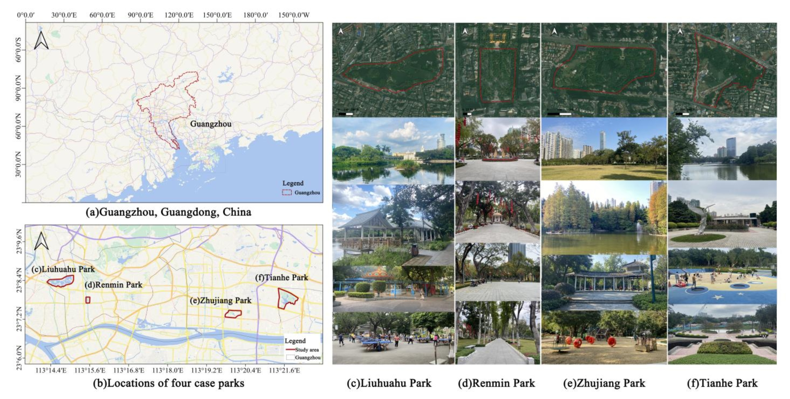
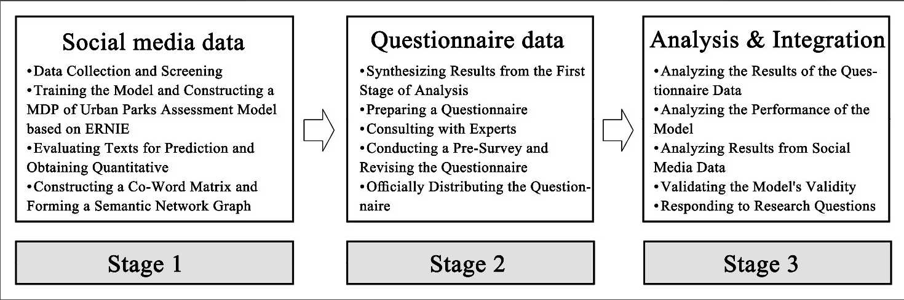
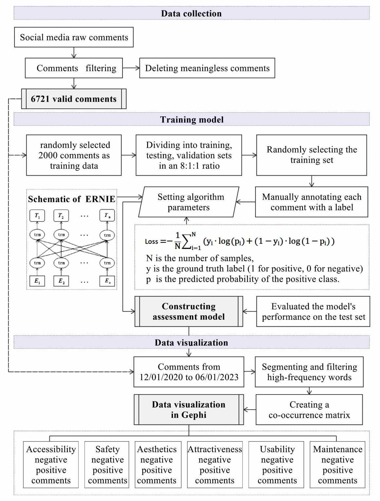
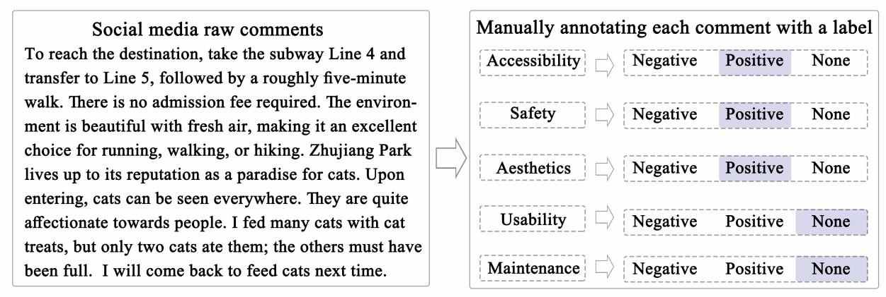
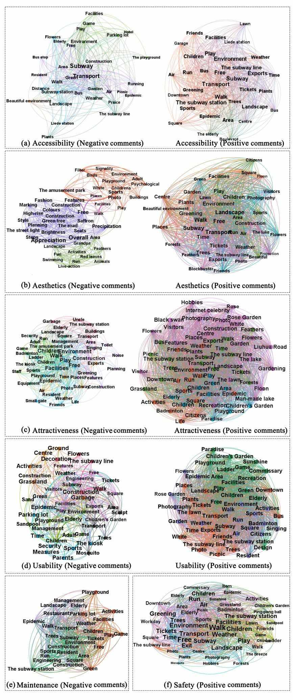
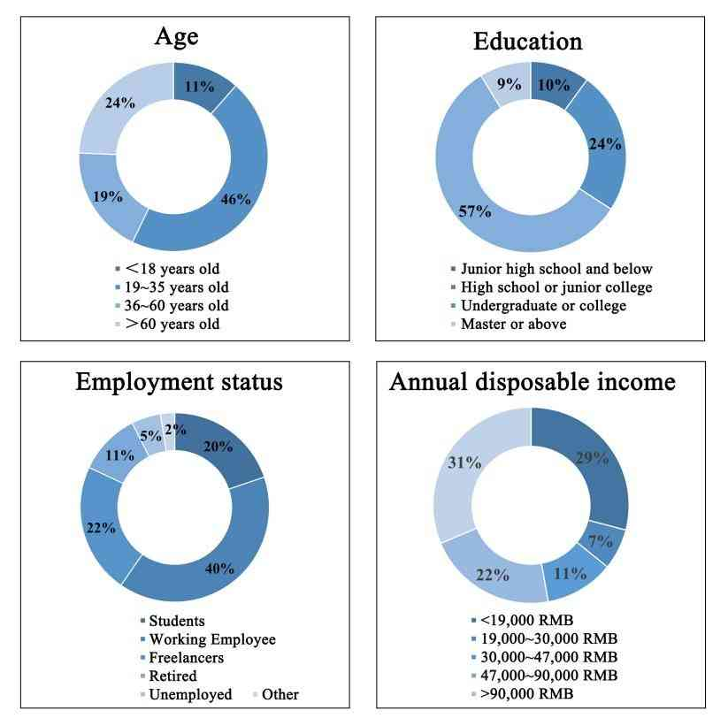
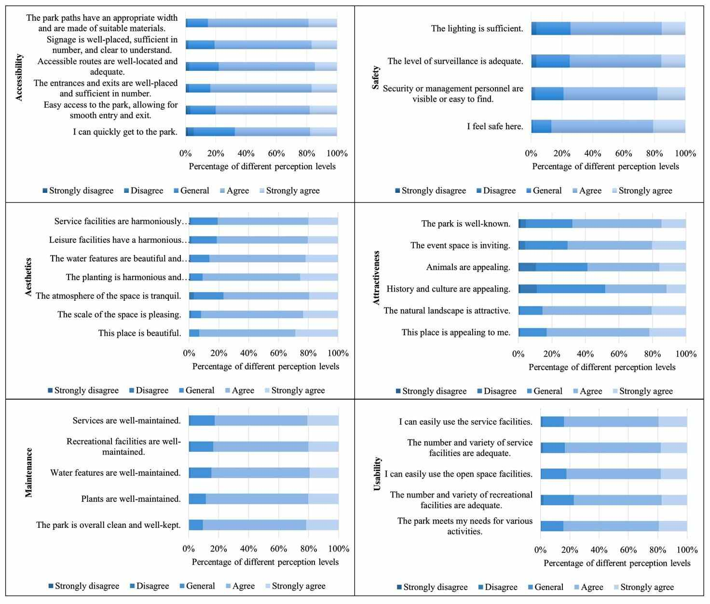

How to quantify multidimensional perception of urban parks? Integrating deep learning-based social media data analysis with questionnaire survey methods
Urban parks are places where people regularly connect with nature and each other. Quantifying perceptions of urban parks presents significant changes. Recently, social media data has been increasingly used for studying landscape perceptions, preferences, and management. With the advent of deep learning techniques, the performance of NLP tasks has seen considerable improvement. We posed research questions at the methodological level: How could deep learning-based NLP methods be constructed to assess the multidimensional perception (MDP) of urban parks? How could the assessment performance of this method be validated? In this study, we constructed an MDP of urban parks assessment model based on ERNIE and subsequently conducted a questionnaire survey. By comparing the differences and similarities between the two data sets, we verified the model's assessment performance and proposed the application potential of deep learning-based methods. The findings indicated: (1) our model effectively obtained and assessed sentiment information from online reviews about park accessibility, safety, aesthetics, attractiveness, maintenance, and usability with an accuracy rate exceeding 80%. (2) The questionnaire survey data confirmed the model's high efficacy, showing consistency in accessibility, aesthetics, and maintenance, but inconsistency in attractiveness and usability due to differences in data expression and timeliness. (3)Deep learning-based NLP methods significantly enhanced sentiment analysis of social media data, showing great potential for practical applications. The results could enhance the performance of sentiment analysis on social media data, serving as a decision-aid tool for park managers and policymakers, and providing valuable insights and guidance for park construction and management.
主要图表 | Main Figures and Tables

Figure 1
Locations and photos of four case parks in Guangzhou, China.

Figure 2
Sequential mixed-methods design.

Figure 3
Modeling the MDP of urban parks assessment model using deep learning-based NLP methods.

Figure 4
Manually annotating each comment (ground truth) with a label.

Figure 5
Co-occurrence network graph of high-frequency keywords.

Figure 6
Demographic characteristics of the respondents.

Figure 7
Distribution of respondents' perceptions across the six dimensions of urban parks.